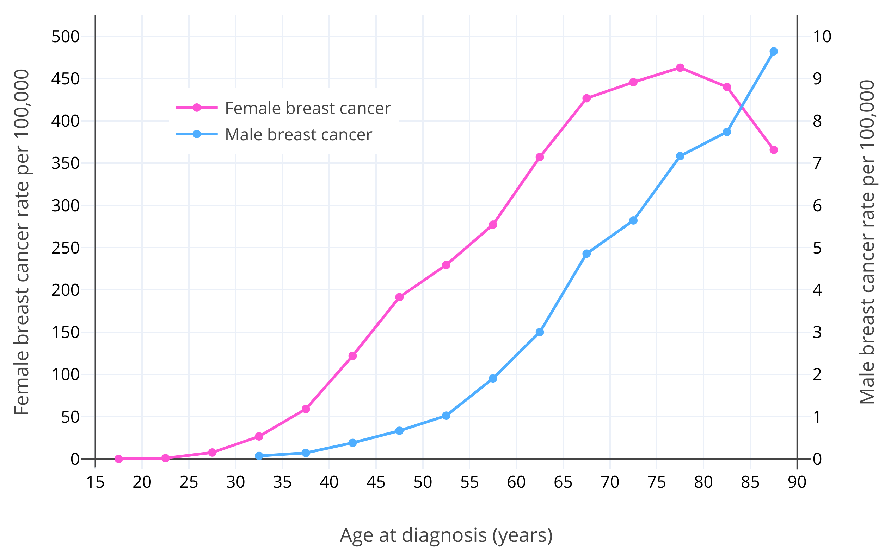
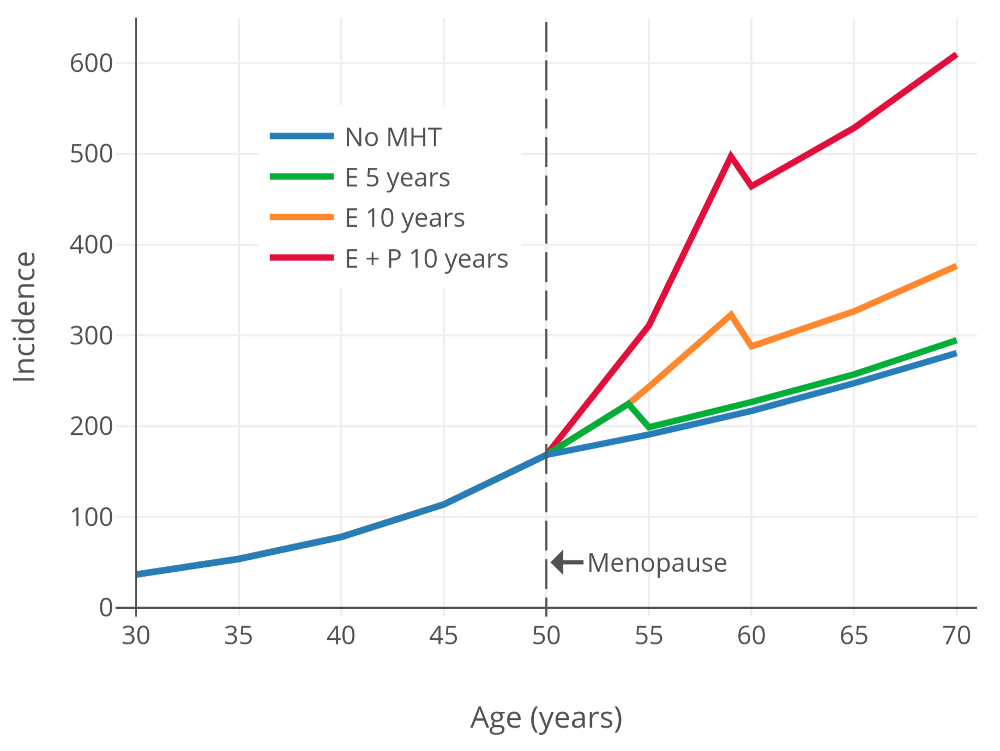

Breast Cancer Risk with Hormone Therapy in Transfeminine People
By Aly | First published April 25, 2020 | Last modified May 8, 2023
Abstract / TL;DR
Estrogens and progestogens induce breast development and this may also increase the risk of breast cancer. Breast cancer risk increases exponentially with age in both women and men and is far greater in women than in men. Estrogens and progestogens have been linked to risk of breast cancer in numerous contexts, for instance ovarian activity, menopausal hormone therapy, antiestrogen therapy, and high-dose estrogen therapy, among others. Only a handful of studies have assessed the influence of estrogens and/or progestogens on breast cancer risk in transfeminine people. The available data are limited and have methodological limitations, but the best available evidence suggests that estrogen and progestogen therapy strongly increases the risk of breast cancer in transfeminine people, with the risk lying somewhere intermediate between that of cisgender women and cisgender men. More research is necessary to better-characterize the risk of breast cancer with hormone therapy in transfeminine people, particularly with longer follow-ups and different hormonal regimens (e.g., estrogen alone versus estrogen plus progestogen). Factors likely to modify breast cancer risk in transfeminine people include duration of hormone therapy, age at start of hormone therapy, concomitant long-term progestogen use, and dosages of estrogens and/or progestogens. Having a single X chromosome (as in transfeminine people and cisgender men) instead of having two (as in cisgender women) may be partially protective against breast cancer. Although the risk of breast cancer is likely increased in transfeminine people, the lifetime incidence is likely low, many years of hormonal exposure are likely required for the risk to accumulate, occurrence is usually in older age, and breast cancer is highly treatable. As such, concerns about breast cancer risk do not preclude hormone therapy for transfeminine people. In any case, breast cancer screening may be advisable in transfeminine people as with cisgender women.
Introduction
Estrogens and progestogens induce breast development in humans. This includes major roles for estrogens in pubertal breast development and progestogens in the breast changes that occur during pregnancy in preparation for lactation and breastfeeding. Breast cancer is far more common in cisgender women than in cisgender men, and hormones are well-known to be involved in the development and progression of breast cancer in cisgender women. For these reasons, it’s logical to assume that hormone therapy in transfeminine people might increase the risk of breast cancer. This is a review of this notion and of the available studies on the subject.
Sex and Age as Breast Cancer Risk Factors
The normal lifetime risk of breast cancer in women is about 1 in 8 or 12.5% (Ban & Godellas, 2014), whereas the normal lifetime risk of breast cancer in men is about 1 in 1,000 or 0.1% (Abdelwahab Yousef, 2017). The overall age-standardized risk of breast cancer in men is about 1 in 100,000 person–years (PY) (Abdelwahab Yousef, 2017; Ottini & Capalbo, 2017). In other words, 1 in 100,000 men are diagnosed with breast cancer every year on average. Fewer than 1% of all cases of breast cancer are in men (Abdelwahab Yousef, 2017; Sun et al., 2017). Thus, breast cancer is frequent in women but is extremely rare in men.
After sex, age is the strongest known risk factor for breast cancer (Momenimovahed & Salehiniya, 2018). Breast cancer risk increases exponentially with age in premenopausal women (Dix & Cohen, 1982). The risk of breast cancer in women is about 1 in 600,000 at age 15; 1 in 75,000 at age 20; 1 in 1,500 at age 30; and 1 in 175 at age 40 (Anders et al., 2009). After menopause, which typically occurs at 50 years of age, breast cancer risk continues to increase but more slowly (Dix & Cohen, 1982; Benz, 2008; Colditz & Rosner, 2000). This is assumed to be due to the much lower levels of estradiol and progesterone in postmenopause (Dix & Cohen, 1982). It has been estimated that if it were not for menopause, there would be 6 times as many cases of breast cancer in women, and hence presumably that a majority of women would develop breast cancer in their lifetimes (Brisken, Hess, & Jeitziner, 2015). Similarly to the case in women, breast cancer risk in men increases exponentially up to about age 65, and thereafter increases somewhat more slowly (Ottini & Capalbo, 2017; Cancer Research UK). This may be related to andropause in older age and consequent lower levels of testosterone and estradiol (Satram, 2006). The typical age of diagnosis of breast cancer is around 60 years in women and 65–70 years in men (Ferzoco & Ruddy, 2016; Giordano, 2018). Figure 1 below shows the risk of breast cancer with age in women and men (Ottini & Capalbo, 2017).
|  |
|---|
| Figure 1: Age-specific incidence rates per 100,000 for male and female invasive breast cancer in White Americans from the Surveillance, Epidemiology, and End Results (SEER) program of the National Cancer Institute (NCI) (2003–2012) (Ottini & Capalbo, 2017). Note that the male breast cancer and female breast cancer lines use different y-axes and corresponding scales (50× larger y-axis interval in the case of female breast cancer). |
Hormone Exposure in Women and Breast Cancer Risk
Along with sex and age, research strongly implicates ovarian activity and ovarian hormones—like estradiol and progesterone—as major risk factors for breast cancer (Ban & Godellas, 2014). Later menarche, earlier menopause, and breastfeeding—all of which result in reduced lifetime ovarian hormone exposure—are associated with decreased risk of breast cancer (Ban & Godellas, 2014; Momenimovahed & Salehiniya, 2018). Surgical removal of the ovaries before 40 years of age is associated with a 50% decrease in lifetime risk of breast cancer (Ban & Godellas, 2014). Antiestrogens including selective estrogen receptor modulators (SERMs) like tamoxifen and aromatase inhibitors (AIs) like anastrozole can be used prophylactically long-term as chemoprevention against breast cancer in high-risk postmenopausal women, providing 50 to 70% reduction in breast cancer risk (Mocellin, Goodwin, & Pasquali, 2019; Nelson et al., 2019). Long-term estrogen and progestogen treatment has been found to produce breast cancer in non-human primates, and high doses may result in breast cancer developing at an earlier age than usual (Cline, 2007).
Besides increasing breast cancer risk, ovarian sex hormones stimulate the progression of active breast cancer. Antiestrogens are effective in the treatment of active breast cancer (Lumachi, Santeufemia, & Basso, 2015), and antiprogestogens like onapristone and mifepristone have shown preliminary effectiveness in the treatment of breast cancer as well (Palmieri et al., 2014). Administration of physiological doses of estrogens to women with breast cancer appears to accelerate tumor progression (Herrmann, Adair, & Woodard, 1947; Nathanson, 1947; Gellhorn & Jones, 1949; Nathanson, 1951; Pearson et al., 1954; Pearson & Lipsett, 1956; Kennedy, 1956; Kennedy, 1957; Dworin, 1961; Kennedy, 1962; Green, Sethi, & Lindner, 1964; Kennedy, 1964; Stoll, 1973; Forrest, 1989).
In accordance with the well-established relationships of ovarian activity and ovarian hormones with breast cancer risk, menopausal hormone therapy is associated with a higher risk of breast cancer in peri- and postmenopausal women (CGHFBC, 2019; Table). This is true both for therapy with an estrogen alone and to a greater extent with the combination of an estrogen and a progestogen (CGHFBC, 2019). In terms of absolute risk of breast cancer with menopausal hormone therapy, the incidence after 20 years of use is about 1.5-fold higher with an estrogen alone and about 2.5-fold higher with an estrogen plus a progestogen per a large recent meta-analysis of all of the available data (CGHFBC, 2019). Hence, the risk of breast cancer is higher with combined estrogen and progestogen therapy than with an estrogen alone. In the past it was thought that progestogens might be protective against breast cancer due to antiestrogenic effects in the breasts (Mauvais-Jarvis, Kuttenn, & Gompel, 1986; Wren & Eden, 1996; Gompel et al., 2002), but this proved not to be the case. The higher risk of breast cancer with menopausal hormone therapy was found to be causal in the Women’s Health Initiative (WHI), at least with the used regimen (specifically conjugated equine estrogens (CEEs) 0.625 mg/day plus medroxyprogesterone acetate (MPA) 2.5 mg/day) (about 1.25-fold higher risk after 5 years of therapy) (WGWHII, 2002; Chlebowski, Aragaki, & Anderson, 2015). The WHI was the largest randomized controlled trial (RCT) of hormone therapy ever conducted and allowed a rare chance to evaluate causation in terms of long-term health effects of hormonal agents.
For a visualization of breast cancer risk with menopausal hormone therapy, Figure 2 below shows breast cancer risk over time based on modeling and data from the observational Nurses’ Health Study (NHS) (Colditz & Rozner, 2000). As can be seen, menopausal hormone therapy is associated with maintenance of the age-related exponential rate of increase in breast-cancer risk that is normally blunted by the onset of menopause.
|  |
|---|
| Figure 2: Incidence of breast cancer (in every 100,000 people per year) by age and hormone therapy status and type in postmenopausal women (Colditz & Rosner, 2000). Based on a Poisson regression model using data from the observational Nurses’ Health Study (Colditz & Rosner, 2000). |
Bioidentical hormones like estradiol and progesterone are associated with increased risk of breast cancer similarly to non-bioidentical hormonal agents like CEEs and MPA (CGHFBC, 2019; Table). The risk of breast cancer with estradiol does not appear to be different from that with CEEs (CGHFBC, 2019). Oral progesterone has not been associated with an increase in risk of breast cancer with less than 5 years of therapy on the basis of the available data, which is in contrast to progestins (Aly, 2018; CGHFBC, 2019; Stute, Wildt, & Neulen, 2018; Mirkin, 2018; Fournier et al., 2007). However, oral progesterone is associated with increased risk of breast cancer after more than 5 years of therapy, by which point the risk appears to be similar in magnitude to that with MPA (Aly, 2018; CGHFBC, 2019; Stute, Wildt, & Neulen, 2018; Mirkin, 2018; Fournier et al., 2007). The initial lower relative risk with oral progesterone might be related to the low levels of progesterone that oral progesterone achieves and hence its comparatively weak progestogenic strength (Aly, 2018; Kuhl & Schneider, 2013; Davey, 2018; Wiki; Graphs). As a result, a longer duration of therapy (and/or larger sample sizes) may be necessary before an increase in breast cancer risk with oral progesterone can be properly quantified (Aly, 2018; Kuhl & Schneider, 2013; Davey, 2018). Virtually no data are available on breast cancer risk with non-oral routes of progesterone at present (Aly, 2018; Stute, Wildt, & Neulen, 2018). However, non-oral and fully potent progesterone is anticipated by some researchers to have a similar risk of breast cancer as progestins not only with long-term use but also with short-term exposure (Aly, 2018; Kuhl & Schneider, 2013; Davey, 2018).
Although the overall evidence including both prospective observational studies and RCTs shows an increased risk of breast cancer with estrogen alone therapy in menopausal women (CGHFBC, 2019), the available RCTs, namely the WHI, have so far been unable to show increased breast cancer risk with estrogen alone and have instead found a significant decrease in risk (RR 0.77, 95% CI 0.64–0.93) (CGHFBC, 2019; Table). Various hypotheses have been advanced to explain the conflicting findings. For instance, the women in the WHI, who constitute the vast majority of the RCT data, were atypical in that they were of relatively old age at start of hormone therapy (average 64 years) and were relatively overweight and obese (CGHFBC, 2019; Kuhl, 2005). Women who are overweight or obese are already at an increased risk of breast cancer and may experience no further increase with estrogen therapy (Kuhl, 2005). And women who have been deprived of estrogens for many years may experience paradoxical inhibitory effects on breast cancer risk, which is in contrast to women who start at menopause (also seen in the observational data) (Prentice, 2008; CGHFBC, 2019). This has been termed the “gap hypothesis” (Palmieri et al., 2014; Mueck & Ruan, 2011). More RCTs are needed to test these theories and determine the influence of estrogens on menopausal breast cancer risk.
Paradoxically, estrogen and/or progestogen exposure can also decrease breast cancer risk and inhibit breast cancer progression under certain circumstances. For instance, pregnancy lasting more than 34 weeks in young women (<35 years of age) increases breast cancer risk in the short-term (<10 years), but is actually protective against breast cancer in the long-term (>20–25 years), with an up to 50% reduction in lifetime risk (Nichols et al., 2019; Husby et al., 2018). Extremely high levels of estrogens and progesterone occur during pregnancy (e.g., >12,500 pg/mL for estradiol at >34 weeks) (Graph), and animal studies suggest that these hormones are responsible for the protection (Rajkumar et al., 2003; Hilakivi-Clarke et al., 2012). High-dose estrogen therapy is an effective treatment against breast cancer in women who are at least 5 years postmenopausal, with similar effectiveness to antiestrogen therapy (Coelingh Bennink et al., 2017; Wiki). Conversely, high-dose estrogen therapy is not effective for breast cancer in premenopausal women, although it does work if massive doses are given (Coelingh Bennink et al., 2017; Wiki). However, these beneficial effects of estrogens and progestogens against breast cancer risk and progression occur under unusual circumstances (e.g., very high levels/doses and/or prolonged prior sex-hormone deficiency) and are not likely to be of relevance to transfeminine people.
{kind=link}
Estrogen Exposure in Men and Breast Cancer Risk
In cisgender men, conditions related to lower androgen exposure and/or higher estrogen exposure are associated with increased risk of breast cancer (Ferzoco & Ruddy, 2016). These conditions include testicular problems and removal as well as liver disease (Abdelwahab Yousef, 2017). Testicular dysfunction and absence result in decreased androgen levels, while liver disease results in higher estrogen levels due to impaired metabolism of estrogens. Both types of conditions result in an increased ratio of estrogens to androgens, in turn causing greater estrogenic stimulation of the breasts. This is presumably responsible for the increased breast cancer risk. Breast conditions in men, like benign breast disease and gynecomastia, have also been associated with breast cancer risk (Sasco, Lowenfels, & Pasker-De Jong, 1993), although findings are mixed for gynecomastia (Giordano, 2005). In addition to health conditions, high-dose estrogen therapy for prostate cancer has been associated with increased breast cancer risk in cisgender men (Thellenberg et al., 2003; Karlsson et al., 2006).
Studies of Breast Cancer Risk in Transfeminine People
A companion doc for this article with a table of available studies on the risk of breast cancer with hormone therapy in transfeminine people can be found here. To date, three large cohorts and several smaller cohorts have evaluated breast cancer risk with transfeminine hormone therapy.
Vrije Universiteit University Medical Center (VUMC) Studies
Most of the studies in the table are by the Vrije Universiteit University Medical Center (VUMC) in Amsterdam, the Netherlands (Asscheman, Gooren, & Eklund, 1989; van Kesteren et al., 1997; Mueller & Gooren, 2008; Asscheman et al., 2011; Gooren et al., 2013; de Blok et al., 2018; de Blok et al., 2019). This clinic treats 95% of transgender people in the Netherlands (de Blok et al., 2019). The studies by the VUMC are all on largely the same evolving cohort of transgender women. For a couple of decades, the VUMC reported a low incidence of breast cancer that was not much higher than the rate expected in cisgender men (only 2 reported cases in 2,300 transgender women over an average duration of hormone therapy of about 20 years) (Gooren et al., 2013). The typical regimen used by the clinic was estrogen and high-dose cyproterone acetate. The studies did not did not use systematic screening for breast cancer and instead presumably relied on patient report for breast cancer diagnosis, raising the possibility of under-detection of cases (Feldman et al., 2016).
In 2019, the VUMC did another follow-up study but this time switched to a new method of obtaining breast cancer diagnoses (de Blok et al., 2019). Instead of simply asking patients whether they’d been diagnosed with breast cancer, the researchers retrieved breast cancer diagnoses using an electronic system of patient records for all of the Netherlands called the Nationwide Network and Registry of Histopathology and Cytopathology in the Netherlands (PALGA). When they did this, their number of breast cancer cases shot up from 2 to 15. This resulted in a relative risk of breast cancer of almost 50-fold the expected risk and an absolute incidence of roughly 0.6% over a mean duration of hormone therapy of about 15 years. These findings supersede all of the previous research by the clinic and indicate that the true number of breast cancer cases in the VUMC cohort had been greatly underestimated in their previous studies. Very large increases in risk, such as the risk of lung cancer with smoking and the nearly 50-fold increase in breast cancer risk in this study, can be considered as likely causal. Accordingly, the increase in risk has been described by researchers using causal language (de Blok et al., 2019; Reactions Weekly, 2019). Prior to this study, it was thought that the increase in risk of breast cancer with hormone therapy in transfeminine people was low, but due to the new data, it’s now known that this isn’t necessarily the case (de Blok, Dreijerink, & Heijer, 2019).
Veterans Health Administration (VHA) Study
Another large cohort is the Veterans Health Administration (VHA) cohort in the United States (Brown & Jones, 2015; Brown, 2015). In 2015, a study was published using data from this cohort. The researchers reported 3 cases of breast cancer in about 3,500 people assigned male at birth with mean follow-up time of approximately 10 years. Hence, there was a rate of about 0.09% over an average duration of 10 years. Although the mean duration of follow up was shorter than in the VUMC cohort, the total follow-up time was similar. The VHA researchers reported the incidence of breast cancer as increased by 33-fold relative to the expected rate. This is somewhat strange in that it’s discrepant with the VUMC’s 2018 numbers (which reported a 46-fold increased risk based on diagnosis in 15 of 2,300 people and mean follow-up time of 15 years). In any case, the VHA concluded that the risk of breast cancer in transfeminine people was higher than that in cisgender men and higher than that reported by the earlier VUMC studies, but still lower than the risk in cisgender women.
The VHA paper provided no specifics on what hormone therapy medications and doses were used, although since it included all patients treated by providers in the VHA system, the regimens are likely to have been quite variable. Because this was the United States, the typical regimen was probably estrogen plus spironolactone and no progestogen.
There are a variety of problems with the VHA study that require discussion:
- As with the earlier VUMC studies, the VHA study did not use systematic screening for breast cancer and presumably relied on patient report for breast cancer diagnoses, raising the possibility of under-detection of cases (Feldman et al., 2016).
- The study was irrespective of hormone therapy (Feldman et al., 2016). Only some people in the cohort were on hormone therapy while others were not, and the researchers didn’t have full numbers on who was and who wasn’t. Moreover, an unknown percentage of people included in the cohort weren’t actually transgender—the researchers also included all cisgender men in the VHA system with a “transgender-related” diagnosis, which included transvestic fetishism (a.k.a. sexual crossdressing). Most of these individuals presumably were not on hormone therapy.
- The follow-up times for those who were definitely on hormone therapy were very short. Of about 1,400 transfeminine people in the VHA cohort who were certainly on hormone therapy, the mean duration of use was only 5.5 years, and was less than 3 years for nearly half of the sample.
- The VHA paper was very confusing and unclear. As an example, they misgendered transgender people, referring to them as “male” and “female” per birth sex, and wrote in such a way that made it difficult to understand who was who as well as who was and was not actually on hormone therapy. This was such that even some citing publications reporting on the study mistakenly got the risks for “male” and “female” switched (e.g., Dente et al., 2019).
- To add further confusion, the VHA researchers reported 33 total cases of breast cancer in the exact same cohort of 5,100 total people assigned male or female at birth in two other papers published around the same time (Brown & Jones, 2014; Brown & Jones, 2016). For comparison, they only reported 10 total cases in the 2015 paper (3 in those assigned male at birth and 7 in people assigned female at birth). The reason for this discrepancy is unknown (Braun et al., 2017).
Due to the various problems with the VHA study, its findings are of limited usefulness and should likely be considered with caution. The 2019 VUMC findings are of far better-quality data.
Kaiser Permanente in California and Georgia Study
The third and final large cohort study was by Kaiser Permanente in Northern California, Southern California, and Georgia in the United States (Silverberg et al., 2017). They reported the incidences of a variety of cancers in a combined cohort from three Kaiser sites consisting of about 2,800 transfeminine people. The mean duration of follow up in the study was only 4 years. The researchers did not report the incidence of any cancer that had an absolute occurrence of less than 5 cases, and breast cancer in transfeminine people was not included in the relevant table of results nor in the discussion in the paper. Hence, there were presumably fewer than 5 cases of breast cancer in the cohort of transfeminine people. However, T’Sjoen and colleagues, a very reputable group of researchers in the field of transgender medical research, reported in a citing publication that the Kaiser team found a higher risk of breast cancer in transfeminine people compared to cisgender men but a lower risk compared to cisgender women (T’Sjoen et al., 2019). Assuming this is accurate, which it likely is, the information was presumably obtained via personal communication with the Kaiser researchers. Limitations of the Kaiser study include lack of exact figures on breast cancer risk and a very short follow-up duration. In addition, cancer diagnoses were retrieved only from Kaiser’s own systems, and the extent to which screening was systematic, if at all, is unclear.
The Kaiser researchers plan to do further studies in much larger cohorts via expansion to additional sites in the future (Silverberg et al., 2017). This is an exciting development, and should hopefully give us additional data on health risks in transgender people, including of breast cancer risk.
Small Cohort Studies
The remaining investigations of breast cancer risk in transfeminine people were small. One was 50 post-SRS transgender women by the Ghent University Hospital in Belgium who were followed up for an average of 11.4 years each, in whom no cases of breast cancer were seen (Wierckx et al., 2012). Another was 60 transgender women by the University Hospital Erlangen in Germany (Dittrich et al., 2005). No cases were seen in this cohort either, although the treatment period was only 2 years. The last was Harry Benjamin’s patient cohort; he communicated in his 1960s publications that he had treated about 150 transgender women with “medium to fairly large doses of estrogen” for varying periods of time (e.g., 3 months to 12 years) and hadn’t encountered any cases of breast cancer (Benjamin, 1964; Benjamin, 1966; Gooren et al., 2013). These cohorts are all too small and limited to provide meaningful quantification of breast cancer risk in transfeminine people.
Discussion of the Available Studies
Inconclusive Quantification of Breast Cancer Risk Due to Short Follow-Up Times
The available studies on breast cancer risk in transfeminine people are inconclusive due to inadequate follow-up times (de Blok, Dreijerink, & Heijer, 2019; Mueller & Gooren, 2008; Gooren, 2011; Gooren et al., 2013; Brown & Jones, 2015). For instance the average durations of hormone therapy in the VUMC and VHA studies were only 10 to 20 years. Breast cancer incidence in cisgender women increases exponentially over decades during premenopause and is very rare until older age. The typical age of breast cancer diagnosis in cisgender women is 60 years, which includes about 50 years of premenopausal hormone exposure and about 10 years of postmenopausal hormone exposure. (The latter of which is not unimportant, as demonstrated by the greatly decreased risk of breast cancer with prophylactic antiestrogen therapy.) As such, due to the short follow-up times of the available studies of transfeminine hormone therapy and breast cancer risk, the true or lifetime risk of breast cancer in transfeminine people is not yet known (Mueller & Gooren, 2008).
We do know however that hormone therapy in transfeminine people, at least with an estrogen plus a progestogen in the form of cyproterone acetate, appears to strongly increase the risk of breast cancer within about 15 years of use (de Blok, Dreijerink, & Heijer, 2019). Fortunately, the risk is intermediate between that in cisgender women and that in cisgender men (and not, e.g., greater than that in cisgender women). At the same time however, the risk is non-negligible, and the absolute incidence will only increase with longer follow-up times. In terms of lifetime risk, the incidence of breast cancer in transfeminine people is well on-track to be as high as single-digit percentages, at least based on the findings of de Blok et al. (2019) and their particular hormone therapy regimen.
Breast Cancer Risk in Relation to Lifetime Hormone Exposure
Transfeminine people may have a lower risk of breast cancer than cisgender women. This may due at least in part to a more limited amount of lifetime hormone exposure (Mueller & Gooren, 2008). This is based on the fact that, at least historically, transfeminine people have started hormone therapy on average at 30 or 40 years of age, which is decades after the age at which cisgender girls normally undergo puberty (Mueller & Gooren, 2008). Additionally, youth may represent a critical window of susceptibility for breast cancer risk (Biro & Wolff, 2011; Biro & Deardorff, 2013; Biro et al., 2020). However, the age at start of hormone therapy in transfeminine people has been decreasing in recent times (Mueller & Gooren, 2008), and nowadays many start hormones in their teens or early twenties. These individuals will have greater lifetime hormone exposure, and presumably greater breast cancer risk, than many of the transfeminine people of the past (Sutherland et al., 2020). Moreover, transfeminine people may be much less inclined to stop hormone therapy at the normal age of menopause in cisgender women (Mueller & Gooren, 2008). Many transfeminine people will likely stay on hormone therapy their entire lives. This additional exposure may further increase breast cancer risk (Mueller & Gooren, 2008).
Breast Cancer Risk in Relation to Progestogens and Dosage
Based on findings that breast cancer risk is higher with an estrogen plus progestogen relative to an estrogen alone in menopausal women, the risk of breast cancer with hormone therapy in transfeminine people may likewise be higher with combined estrogen and progestogen therapy (de Blok, Dreijerink, & Heijer, 2019). Hence, it’s possible that estrogen therapy without a progestogen could have a lower risk of breast cancer than that observed by the VUMC with an estrogen plus cyproterone acetate (de Blok, Dreijerink, & Heijer, 2019). It’s notable also that the doses of cyproterone acetate used by the VUMC result in rather extreme progestogenic exposure (Aly, 2019). The extent to which breast cancer risk with progestogens is dose-dependent is unknown. Whether or not estrogen dosage influences breast cancer risk, or if higher levels have greater risk, is unclear similarly. In any case, the fact that the use of estrogen–progestogen birth control in premenopausal women is associated with increased risk of breast cancer is suggestive that higher levels of estrogen and/or progestogen exposure may result in some degree of greater risk (Kahlenborn et al., 2006; Zhu et al., 2012; Ji et al., 2019). In addition, an older observational study reported a 4-fold greater risk of breast cancer in menopausal cisgender women treated with injectable estrogens than with oral estrogens or no hormone therapy (Hulka et al., 1982; Coe & Parks, 1989). This is notable as typical doses of injectable estrogens provide much greater estrogenic exposure than oral and other routes of estrogen (Göretzlehner et al., 2002; Aly, 2021). However, the study has important limitations, including only being a single study and being quite old.
X Chromosomes and Breast Cancer Risk
The sex chromosomes include the X chromosome and the Y chromosome. Cisgender women typically have two X chromosomes (46,XX karyotype), while cisgender men (and transfeminine people) typically have one X chromosome and one Y chromosome (46,XY karyotype). It’s possible that a 46,XX karyotype—specifically the presence of a second X chromosome—may be a major risk factor for breast cancer. X-chromosome gain and aberrant X-chromosome inactivation have been associated with breast cancer incidence and aggressiveness (Nakopoulou et al., 2007; Di Oto et al., 2015; Lin et al., 2015; Chaligné et al., 2015; Di Oto et al., 2018). In addition, breast cancer risk is markedly higher in men with Klinefelter’s syndrome (KS), who have a 46,XXY karyotype, than in regular men with a 46,XY karyotype. Conversely, breast cancer has never been reported in women with complete androgen insensitivity syndrome (CAIS), who have a 46,XY karyotype similarly to transfeminine people (Hughes et al., 2012; Tiefenbacher & Daxenbichler, 2008; Hughes, 2009). This is in spite of the fact that CAIS women have excellent breast development (Aly, 2020). However, hormonal abnormalities in people with KS and CAIS may alternatively contribute to differences in breast cancer risk and are thus a confounding variable. It’s notable in particular that CAIS women have relatively low estrogen exposure and little to no progesterone. In any case, the differences in breast cancer risk in conditions like KS and CAIS do not seem to be fully explainable by hormonal abnormalities. Thus, it’s possible that the lack of two X chromosomes in transfeminine people may indeed prove to be partially protective against breast cancer risk. For more in-depth information on this topic, see the supplemental article here.
Summary and Conclusions
Breast cancer risk is far higher in women than in men. The incidence of breast cancer increases exponentially with age and is very rare in younger people. There is strong basis to assume that estrogens and progestogens increase the risk of breast cancer, which can be inferred as a major mechanism for the sex differences in breast cancer risk. The available data do not indicate meaningful differences between bioidentical and non-bioidentical hormones in terms of breast cancer risk.
Older studies of transfeminine hormone therapy and breast cancer risk found low incidences of breast cancer in transfeminine people. However, a recent study with better methodology than previous studies showed a nearly 50-fold increase in breast cancer risk. The hormone therapy regimen used by their cohort was specifically estrogen plus cyproterone acetate. It’s unknown whether other hormonal regimens, for instance estrogen alone or with a non-progestogenic antiandrogen, have similar risks. The available data on breast cancer risk in transfeminine people are limited by inadequate follow-up times. As a result, lifetime breast cancer risk is unknown. Based on available data however, we can project into the future and assume that the lifetime incidence of breast cancer in transfeminine people may be as high as single-digit percentages. This puts the risk of breast cancer in transfeminine people somewhere between that of cisgender men and cisgender women.
Various factors may modify breast cancer risk with transfeminine hormone therapy. Examples include cumulative duration of use, age at start of therapy, long-term progestogen use, and possibly dosages of estrogens and/or progestogens. The lack of a second X chromosome in transfeminine people may be partially protective against breast cancer. Although breast cancer risk with transfeminine hormone therapy is something for transfeminine people to be aware of, particularly the probable contribution of progestogens to the risk, the lifetime incidence is likely to be low and the risk appears to be less than that of cisgender women. In addition, it takes many years of hormone exposure for breast cancer to occur and is generally restricted to old age. Also, breast cancer is a highly treatable disease, with excellent 5- and 10-year survival rates (Cancer.Net). For these reasons, concerns about breast cancer should most certainly not preclude hormone therapy for transfeminine people.
The possibility of breast cancer with hormone therapy in transfeminine people does, however, highlight the importance of routine breast cancer screening in transfeminine people of appropriate age and duration of hormone exposure (Chowdhry & O’Connell, 2020). It’s likely advisable that transfeminine people on long-term hormone therapy follow the same breast cancer screening procedures as those of cisgender women (Chowdhry & O’Connell, 2020).
References
- Abdelwahab Yousef, A. J. (2017). Male Breast Cancer: Epidemiology and Risk Factors. Seminars in Oncology, 44(4), 267–272. [DOI:10.1053/j.seminoncol.2017.11.002]
- Anders, C. K., Johnson, R., Litton, J., Phillips, M., & Bleyer, A. (2009). Breast Cancer Before Age 40 Years. Seminars in Oncology, 36(3), 237–249. [DOI:10.1053/j.seminoncol.2009.03.001]
- Asscheman, H., Gooren, L., & Eklund, P. (1989). Mortality and morbidity in transsexual patients with cross-gender hormone treatment. Metabolism, 38(9), 869–873. [DOI:10.1016/0026-0495(89)90233-3]
- Asscheman, H., Giltay, E. J., Megens, J. A., de Ronde, W., van Trotsenburg, M. A., & Gooren, L. J. (2011). A long-term follow-up study of mortality in transsexuals receiving treatment with cross-sex hormones. European Journal of Endocrinology, 164(4), 635–642. [DOI:10.1530/eje-10-1038]
- Ban, K. A., & Godellas, C. V. (2014). Epidemiology of Breast Cancer. Surgical Oncology Clinics of North America, 23(3), 409–422. [DOI:10.1016/j.soc.2014.03.011]
- Benjamin, H. (1964). Clinical Aspects of Transsexualism in the Male and Female. American Journal of Psychotherapy, 18(3), 458–469. [DOI:10.1176/appi.psychotherapy.1964.18.3.458]
- Benjamin, H. (1966). The Transsexual Phenomenon. New York: Julian Press. [Google Scholar] [Google Books] [PDF]
- Benz, C. C. (2008). Impact of aging on the biology of breast cancer. Critical Reviews in Oncology/Hematology, 66(1), 65–74. [DOI:10.1016/j.critrevonc.2007.09.001]
- Biro, F. M., & Wolff, M. S. (2011). Puberty as a Window of Susceptibility. In Russo, J. (Ed.). Environment and Breast Cancer (pp. 29–41). New York: Springer New York. [DOI:10.1007/978-1-4419-9896-5_2]
- Biro, F. M., & Deardorff, J. (2013). Identifying Opportunities for Cancer Prevention During Preadolescence and Adolescence: Puberty as a Window of Susceptibility. Journal of Adolescent Health, 52(5), S15–S20. [DOI:10.1016/j.jadohealth.2012.09.019]
- Biro, F. M., Huang, B., Wasserman, H., Gordon, C. M., & Pinney, S. M. (2021). Pubertal Growth, IGF-1, and Windows of Susceptibility: Puberty and Future Breast Cancer Risk. Journal of Adolescent Health, 68(3), 517–522. [DOI:10.1016/j.jadohealth.2020.07.016]
- Braun, H., Nash, R., Tangpricha, V., Brockman, J., Ward, K., & Goodman, M. (2017). Cancer in Transgender People: Evidence and Methodological Considerations. Epidemiologic Reviews, 39(1), 93–107. [DOI:10.1093/epirev/mxw003]
- Brisken, C., Hess, K., & Jeitziner, R. (2015). Progesterone and Overlooked Endocrine Pathways in Breast Cancer Pathogenesis. Endocrinology, 156(10), 3442–3450. [DOI:10.1210/en.2015-1392]
- Brown, G. R., & Jones, K. T. (2014). Incidence of breast cancer in a cohort of 5,135 transgender veterans. Breast Cancer Research and Treatment, 149(1), 191–198. [DOI:10.1007/s10549-014-3213-2]
- Brown, G. R., & Jones, K. T. (2014). Racial Health Disparities in a Cohort of 5,135 Transgender Veterans. Journal of Racial and Ethnic Health Disparities, 1(4), 257–266. [DOI:10.1007/s40615-014-0032-4]
- Brown, G. R. (2015). Breast Cancer in Transgender Veterans: A Ten-Case Series. LGBT Health, 2(1), 77–80. [DOI:10.1089/lgbt.2014.0123]
- Brown, G. R., & Jones, K. T. (2016). Mental Health and Medical Health Disparities in 5135 Transgender Veterans Receiving Healthcare in the Veterans Health Administration: A Case–Control Study. LGBT Health, 3(2), 122–131. [DOI:10.1089/lgbt.2015.0058]
- Cancer Research UK. (2020). Breast cancer incidence (invasive) statistics. Cancer Research UK. [URL]
- Cancer.Net. (2020). Breast Cancer: Statistics. American Society of Clinical Oncology. [URL]
- Chaligné, R., Popova, T., Mendoza-Parra, M., Saleem, M. M., Gentien, D., Ban, K., Piolot, T., Leroy, O., Mariani, O., Gronemeyer, H., Vincent-Salomon, A., Stern, M., & Heard, E. (2015). The inactive X chromosome is epigenetically unstable and transcriptionally labile in breast cancer. Genome Research, 25(4), 488–503. [DOI:10.1101/gr.185926.114]
- Chlebowski, R. T., Aragaki, A. K., & Anderson, G. L. (2015). Menopausal Hormone Therapy Influence on Breast Cancer Outcomes in the Women’s Health Initiative. Journal of the National Comprehensive Cancer Network, 13(7), 917–924. [DOI:10.6004/jnccn.2015.0106]
- Chowdhry, D. N., & O’Connell, A. M. (2020). Breast Imaging in Transgender Patients. Journal of Breast Imaging, 2(2), 161–167. [DOI:10.1093/jbi/wbz092]
- Cline, J. M. (2007). Assessing the mammary gland of nonhuman primates: effects of endogenous hormones and exogenous hormonal agents and growth factors. Birth Defects Research Part B: Developmental and Reproductive Toxicology, 80(2), 126–146. [DOI:10.1002/bdrb.20112]
- Coe, F. L., & Parks, J. H. (1989). The Risks of Oral Contraceptives and Estrogen Replacement Therapy. Perspectives in Biology and Medicine, 33(1), 86–106. [DOI:10.1353/pbm.1990.0026]
- Coelingh Bennink, H. J., Verhoeven, C., Dutman, A. E., & Thijssen, J. (2017). The use of high-dose estrogens for the treatment of breast cancer. Maturitas, 95, 11–23. [DOI:10.1016/j.maturitas.2016.10.010]
- Colditz, G. A. (2000). Cumulative Risk of Breast Cancer to Age 70 Years According to Risk Factor Status: Data from the Nurses’ Health Study. American Journal of Epidemiology, 152(10), 950–964. [DOI:10.1093/aje/152.10.950]
- Collaborative Group on Hormonal Factors in Breast Cancer. (2019). Type and timing of menopausal hormone therapy and breast cancer risk: individual participant meta-analysis of the worldwide epidemiological evidence. The Lancet, 394(10204), 1159–1168. [DOI:10.1016/s0140-6736(19)31709-x]
- Davey, D. A. (2018). Menopausal hormone therapy: a better and safer future. Climacteric, 21(5), 454–461. [DOI:10.1080/13697137.2018.1439915]
- de Blok, C. J., Wiepjes, C. M., Nota, N. M., van Engelen, K., Adank, M. A., Dreijerink, K. M., Barbé, E., Konings, R. H., & den Heijer, M. (2018). Breast cancer in transgender persons receiving gender affirming hormone treatment: results of a nationwide cohort study. Endocrine Abstracts, 56 [20th European Congress of Endocrinology 2018, 19–22 May 2018, Barcelona, Spain], 490–490 (abstract no. P955). [DOI:10.1530/endoabs.56.p955] [PDF]
- de Blok, C. J., Dreijerink, K. M., & den Heijer, M. (2019). Cancer Risk in Transgender People. Endocrinology and Metabolism Clinics of North America, 48(2), 441–452. [DOI:10.1016/j.ecl.2019.02.005]
- de Blok, C. J., Wiepjes, C. M., Nota, N. M., van Engelen, K., Adank, M. A., Dreijerink, K. M., Barbé, E., Konings, I. R., & den Heijer, M. (2019). Breast cancer risk in transgender people receiving hormone treatment: nationwide cohort study in the Netherlands. BMJ, 365, l1652. [DOI:10.1136/bmj.l1652]
- Dente, E., Farneth, R., Purks, J., & Torelli, S. (2019). Evaluating risks, reported cases and screening recommendations for breast cancer in transgender patients. Georgetown Medical Review, 3(1). [DOI:10.52504/001c.7774]
- Di Oto, E., Monti, V., Cucchi, M. C., Masetti, R., Varga, Z., & Foschini, M. P. (2015). X chromosome gain in male breast cancer. Human Pathology, 46(12), 1908–1912. [DOI:10.1016/j.humpath.2015.08.008]
- Di Oto, E., Biserni, G. B., Varga, Z., Morandi, L., Cucchi, M. C., Masetti, R., & Foschini, M. P. (2018). X chromosome gain is related to increased androgen receptor expression in male breast cancer. Virchows Archiv, 473(2), 155–163. [DOI:10.1007/s00428-018-2377-2]
- Dix, D., & Cohen, P. (1982). The incidence of breast cancer: analysis of the age dependence. Anticancer Research, 2(1-2), 23–7. [Google Scholar] [PubMed] [PDF]
- Dworin, M. (1961). The Rationale of Endocrine Therapy in Breast Cancer. CA: A Cancer Journal for Clinicians, 11(2), 48–54. [DOI:10.3322/canjclin.11.2.48]
- Feldman, J., Brown, G. R., Deutsch, M. B., Hembree, W., Meyer, W., Meyer-Bahlburg, H. F., Tangpricha, V., T’Sjoen, G., & Safer, J. D. (2016). Priorities for transgender medical and healthcare research. Current Opinion in Endocrinology, Diabetes & Obesity, 23(2), 180–187. [DOI:10.1097/med.0000000000000231]
- Ferzoco, R. M., & Ruddy, K. J. (2016). The Epidemiology of Male Breast Cancer. Current Oncology Reports, 18, 1. [DOI:10.1007/s11912-015-0487-4]
- Forrest, A. P. (1989). Endocrine management of breast cancer. Proceedings of the Royal Society of Edinburgh. Section B. Biological Sciences, 95 [Oestrogen and the Human Breast], 1–10. [DOI:10.1017/s0269727000010502]
- Fournier, A., Berrino, F., & Clavel-Chapelon, F. (2007). Unequal risks for breast cancer associated with different hormone replacement therapies: results from the E3N cohort study. Breast Cancer Research and Treatment, 107(1), 103–111. [DOI:10.1007/s10549-007-9523-x]
- Gellhorn, A., & Jones, L. O. (1949). Chemotherapy of malignant disease. The American Journal of Medicine, 6(2), 188–231. [DOI:10.1016/0002-9343(49)90017-0]
- Giordano, S. H. (2005). A Review of the Diagnosis and Management of Male Breast Cancer. The Oncologist, 10(7), 471–479. [DOI:10.1634/theoncologist.10-7-471]
- Giordano, S. H. (2018). Breast Cancer in Men. New England Journal of Medicine, 378(24), 2311–2320. [DOI:10.1056/nejmra1707939]
- Gompel, A., Levy, D., Chaouat, M., Kazem, A., Hugol, D., Daraı̈, E., Decroix, Y., & Rostène, W. (2002). Is there a place for progestin agents in breast cancer prevention? International Congress Series, 1229, 143–150. [DOI:10.1016/s0531-5131(01)00467-8]
- Gooren, L. J. (2011). Care of Transsexual Persons. New England Journal of Medicine, 364(13), 1251–1257. [DOI:10.1056/nejmcp1008161]
- Gooren, L. J., van Trotsenburg, M. A., Giltay, E. J., & van Diest, P. J. (2013). Breast Cancer Development in Transsexual Subjects Receiving Cross-Sex Hormone Treatment. The Journal of Sexual Medicine, 10(12), 3129–3134. [DOI:10.1111/jsm.12319]
- Göretzlehner, G., Ackermann, W., Angelow, K., Bergmann, G., Bieck, E., Golbs, S., & Kliem, O. (2002). Pharmakokinetik von Estron, Estradiol, FSH, LH und Prolaktin nach intramuskulärer Applikation von 5 mg Estradiolvalerat. [Pharmacokinetics of estradiol valerate in postmenopausal women after intramuscular administration.] Journal für Menopause, 9(2), 46–49. [Google Scholar] [URL] [PDF] [Translation]
- Green, R. B., Sethi, R. S., & Lindner, H. H. (1964). Treatment of advanced carcinoma of the breast. The American Journal of Surgery, 108(1), 107–121. [DOI:10.1016/0002-9610(64)90094-7]
- Herrmann, J. B. (1947). Effect of estrogenic hormone on advanced carcinoma of the female breast. Archives of Surgery, 54(1), 1–9. [DOI:10.1001/archsurg.1947.01230070004001]
- Hilakivi-Clarke, L., de Assis, S., Warri, A., & Luoto, R. (2012). Pregnancy hormonal environment and mother’s breast cancer risk. Hormone Molecular Biology and Clinical Investigation, 9(1), 11–23. [DOI:10.1515/hmbci-2012-0019]
- Hughes, I. A. (2010). Evaluation and Management of Disorders of Sex Development. In Brook, C. G. D., Clayton, P. E., & Brown, R. S. (Eds.). Brook’s Clinical Pediatric Endocrinology, 6th Edition (pp. 192–212). Oxford: Wiley-Blackwell. [DOI:10.1002/9781444316728.ch9]
- Hughes, I. A., Davies, J. D., Bunch, T. I., Pasterski, V., Mastroyannopoulou, K., & MacDougall, J. (2012). Androgen insensitivity syndrome. The Lancet, 380(9851), 1419–1428. [DOI:10.1016/s0140-6736(12)60071-3]
- Hulka, B. S., Chambless, L. E., Deubner, D. C., & Wilkinson, W. E. (1982). Breast cancer and estrogen replacement therapy. American Journal of Obstetrics and Gynecology, 143(6), 638–644. [DOI:10.1016/0002-9378(82)90108-9]
- Husby, A., Wohlfahrt, J., Øyen, N., & Melbye, M. (2018). Pregnancy duration and breast cancer risk. Nature Communications, 9(1), 4255. [DOI:10.1038/s41467-018-06748-3]
- Ji, L., Jing, C., Zhuang, S., Pan, W., & Hu, X. (2019). Effect of age at first use of oral contraceptives on breast cancer risk. Medicine, 98(36), e15719–e15719. [DOI:10.1097/md.0000000000015719]
- Kahlenborn, C., Modugno, F., Potter, D. M., & Severs, W. B. (2006). Oral Contraceptive Use as a Risk Factor for Premenopausal Breast Cancer: A Meta-analysis. Mayo Clinic Proceedings, 81(10), 1290–1302. [DOI:10.4065/81.10.1290]
- Karlsson, C. T., Malmer, B., Wiklund, F., & Grönberg, H. (2006). Breast Cancer as a Second Primary in Patients With Prostate Cancer—Estrogen Treatment or Association With Family History of Cancer? Journal of Urology, 176(2), 538–543. [DOI:10.1016/j.juro.2006.03.036]
- Kennedy, B.J. (1956). Effects of steroids in women with breast cancer. In Engle, E. T., & Pincus, G. (Eds.). Hormones and the Aging Process: Proceedings of a Conference Held at Arden House, Harriman, New York, 1955 (pp. 253–272). New York: Academic Press. [Google Scholar] [Google Books]
- Kennedy, B. J. (1957). The Present Status of Hormone Therapy in Advanced Breast Cancer. Radiology, 69(3), 330–340. [DOI:10.1148/69.3.330]
- Kennedy, B. J. (1962). Massive estrogen administration in premenopausal women with metastatic breast cancer. Cancer, 15(3), 641–648. [DOI:10.1002/1097-0142(196205/06)15:3<641::aid-cncr2820150330>3.0.co;2-9]
- Kennedy, B. J. (1964). Estrogenic Hormone Therapy in Advanced Breast Cancer. Annals of Internal Medicine, 60(4), 718–718. [DOI:10.7326/0003-4819-60-4-718_1]
- Kuhl, H. (2005). Breast cancer risk in the WHI study: The problem of obesity. Maturitas, 51(1), 83–97. [DOI:10.1016/j.maturitas.2005.02.018]
- Kuhl, H., & Schneider, H. P. (2013). Progesterone – promoter or inhibitor of breast cancer. Climacteric, 16(Suppl 1), 54–68. [DOI:10.3109/13697137.2013.768806]
- Lin, I., Chen, D., Chang, Y., Lee, Y., Su, C., Cheng, C., Tsai, Y., Ng, S., Chen, H., Lee, M., Chen, H., Suen, S., Chen, Y., Liu, T., Chang, C., & Hsu, M. (2015). Hierarchical Clustering of Breast Cancer Methylomes Revealed Differentially Methylated and Expressed Breast Cancer Genes. PLOS ONE, 10(2), e0118453. [DOI:10.1371/journal.pone.0118453]
- Lumachi, F. (2015). Current medical treatment of estrogen receptor-positive breast cancer. World Journal of Biological Chemistry, 6(3), 231–239. [DOI:10.4331/wjbc.v6.i3.231]
- Mauvais-Jarvis, P., Kuttenn, F., & Gompel, A. (1986). Antiestrogen action of progesterone in breast tissue. Breast Cancer Research and Treatment, 8(3), 179–188. [DOI:10.1007/bf01807330]
- Mirkin, S. (2018). Evidence on the use of progesterone in menopausal hormone therapy. Climacteric, 21(4), 346–354. [DOI:10.1080/13697137.2018.1455657]
- Mocellin, S., Goodwin, A., & Pasquali, S. (2019). Risk-reducing medications for primary breast cancer: a network meta-analysis. Cochrane Database of Systematic Reviews, 2019(4), CD012191. [DOI:10.1002/14651858.cd012191.pub2]
- Momenimovahed, Z., & Salehiniya, H. (2019). Epidemiological characteristics of and risk factors for breast cancer in the world. Breast Cancer: Targets and Therapy, 11, 151–164. [DOI:10.2147/bctt.s176070]
- Mueck, A. O., & Ruan, X. (2011). Benefits and risks during HRT: main safety issue breast cancer. Hormone Molecular Biology and Clinical Investigation, 5(2), 105–116. [DOI:10.1515/hmbci.2011.014]
- Mueller, A., & Gooren, L. (2008). Hormone-related tumors in transsexuals receiving treatment with cross-sex hormones. European Journal of Endocrinology, 159(3), 197–202. [DOI:10.1530/eje-08-0289]
- Nakopoulou, L., Panayotopoulou, E. G., Giannopoulou, I., Tsirmpa, I., Katsarou, S., Mylona, E., Alexandrou, P., & Keramopoulos, A. (2006). Extra copies of chromosomes 16 and X in invasive breast carcinomas are related to aggressive phenotype and poor prognosis. Journal of Clinical Pathology, 60(7), 808–815. [DOI:10.1136/jcp.2006.037838]
- Nathanson, I. T. (1947). Hormonal Alteration of Advanced Cancer of the Breast. Surgical Clinics of North America, 27(5), 1144–1150. [DOI:10.1016/s0039-6109(16)32241-1]
- Nathanson, I. T. (1951). Sex Hormones and Castration in Advanced Breast Cancer. Radiology, 56(4), 535–552. [DOI:10.1148/56.4.535]
- Nelson, H. D., Fu, R., Zakher, B., Pappas, M., & McDonagh, M. (2019). Medication Use for the Risk Reduction of Primary Breast Cancer in Women. JAMA, 322(9), 868–886. [DOI:10.1001/jama.2019.5780]
- Nichols, H. B., Schoemaker, M. J., Cai, J., Xu, J., Wright, L. B., Brook, M. N., Jones, M. E., Adami, H., Baglietto, L., Bertrand, K. A., Blot, W. J., Boutron-Ruault, M., Dorronsoro, M., Dossus, L., Eliassen, A. H., Giles, G. G., Gram, I. T., Hankinson, S. E., Hoffman-Bolton, J., Kaaks, R., Key, T. J., Kitahara, C. M., Larsson, S. C., Linet, M., Merritt, M. A., Milne, R. L., Pala, V., Palmer, J. R., Peeters, P. H., Riboli, E., Sund, M., Tamimi, R. M., Tjønneland, A., Trichopoulou, A., Ursin, G., Vatten, L., Visvanathan, K., Weiderpass, E., Wolk, A., Zheng, W., Weinberg, C. R., Swerdlow, A. J., & Sandler, D. P. (2018). Breast Cancer Risk After Recent Childbirth. Annals of Internal Medicine, 170(1), 22–31. [DOI:10.7326/m18-1323]
- Ottini, L., & Capalbo, C. (2017). Male Breast Cancer. In Veronesi, U., Goldhirsch, A., Veronesi, P., Gentilini, O. D., & Leonardi, M. C. (Eds.). Breast Cancer: Innovations in Research and Management (pp. 753–762). Cham: Springer. [DOI:10.1007/978-3-319-48848-6_63]
- Palmieri, C., Patten, D. K., Januszewski, A., Zucchini, G., & Howell, S. J. (2014). Breast cancer: Current and future endocrine therapies. Molecular and Cellular Endocrinology, 382(1), 695–723. [DOI:10.1016/j.mce.2013.08.001]
- Pearson, O. H. (1954). Evaluation of endocrine therapy for advanced breast cancer. JAMA, 154(3), 234–239. [DOI:10.1001/jama.1954.02940370046013]
- Pearson, O. H., & Lipsett, M. B. (1956). Endocrine Management of Metastatic Breast Cancer. Medical Clinics of North America, 40(3), 761–772. [DOI:10.1016/s0025-7125(16)34564-3]
- Prentice, R. L. (2008). Women’s Health Initiative Studies of Postmenopausal Breast Cancer. In Li, J. J., Li, S. A., Mohla, S., Rochefort, H., & Maudelonde, T. (Eds.). Hormonal Carcinogenesis V (Advances in Experimental Medicine and Biology, Volume 617) (pp. 151–160). New York: Springer New York. [DOI:10.1007/978-0-387-69080-3_14]
- Rajkumar, L., Guzman, R. C., Yang, J., Thordarson, G., Talamantes, F., & Nandi, S. (2003). Prevention of mammary carcinogenesis by short-term estrogen and progestin treatments. Breast Cancer Research, 6(1), R31. [DOI:10.1186/bcr734]
- Reactions Weekly. (2019). Hormones increase breast cancer risk in Dutch transgender women. Reactions Weekly, 1754, 9–9. [DOI:10.1007/s40278-019-62242-2]
- Sasco, A. J., Lowenfels, A. B., & Jong, P. P. (1993). Review article: Epidemiology of male breast cancer. A meta-analysis of published case-control studies and discussion of selected aetiological factors. International Journal of Cancer, 53(4), 538–549. [DOI:10.1002/ijc.2910530403]
- Satram, S. (2006). Genetic and environmental factors and male breast cancer risk. (Doctoral dissertation, University of California, Irvine.) [Google Scholar] [URL]
- Silverberg, M. J., Nash, R., Becerra-Culqui, T. A., Cromwell, L., Getahun, D., Hunkeler, E., Lash, T. L., Millman, A., Quinn, V. P., Robinson, B., Roblin, D., Slovis, J., Tangpricha, V., & Goodman, M. (2017). Cohort study of cancer risk among insured transgender people. Annals of Epidemiology, 27(8), 499–501. [DOI:10.1016/j.annepidem.2017.07.007]
- Stoll, B. A. (1973). Hypothesis: Breast Cancer Regression under Oestrogen Therapy. BMJ, 3(5877), 446–450. [DOI:10.1136/bmj.3.5877.446]
- Stute, P., Wildt, L., & Neulen, J. (2018). The impact of micronized progesterone on breast cancer risk: a systematic review. Climacteric, 21(2), 111–122. [DOI:10.1080/13697137.2017.1421925]
- Sun, Y., Zhao, Z., Yang, Z., Xu, F., Lu, H., Zhu, Z., Shi, W., Jiang, J., Yao, P., & Zhu, H. (2017). Risk Factors and Preventions of Breast Cancer. International Journal of Biological Sciences, 13(11), 1387–1397. [DOI:10.7150/ijbs.21635]
- Sutherland, N., Espinel, W., Grotzke, M., & Colonna, S. (2020). Unanswered Questions: Hereditary breast and gynecological cancer risk assessment in transgender adolescents and young adults. Journal of Genetic Counseling, 29(4), 625–633. [DOI:10.1002/jgc4.1278]
- T’Sjoen, G., Arcelus, J., Gooren, L., Klink, D. T., & Tangpricha, V. (2018). Endocrinology of Transgender Medicine. Endocrine Reviews, 40(1), 97–117. [DOI:10.1210/er.2018-00011]
- Thellenberg, C., Malmer, B., Tavelin, B., & Grönberg, H. (2003). Second Primary Cancers in Men With Prostate Cancer: An Increased Risk of Male Breast Cancer. Journal of Urology, 169(4), 1345–1348. [DOI:10.1097/01.ju.0000056706.88960.7c]
- Tiefenbacher, K., & Daxenbichler, G. (2008). The Role of Androgens in Normal and Malignant Breast Tissue. Breast Care, 3(5), 325–331. [DOI:10.1159/000158055]
- Van Kesteren, P. J., Asscheman, H., Megens, J. A., & Gooren, L. J. (1997). Mortality and morbidity in transsexual subjects treated with cross-sex hormones. Clinical Endocrinology, 47(3), 337–343. [DOI:10.1046/j.1365-2265.1997.2601068.x]
- Wierckx, K., Mueller, S., Weyers, S., Van Caenegem, E., Roef, G., Heylens, G., & T’Sjoen, G. (2012). Long‐Term Evaluation of Cross‐Sex Hormone Treatment in Transsexual Persons. The Journal of Sexual Medicine, 9(10), 2641–2651. [DOI:10.1111/j.1743-6109.2012.02876.x]
- Wren, B. G., & Eden, J. A. (1996). Do Progestogens Reduce The Risk of Breast Cancer? A Review of the Evidence. Menopause, 3(1), 4–12. [DOI:10.1097/00042192-199603010-00003]
- Writing Group for the Women’s Health Initiative Investigators. (2002). Risks and Benefits of Estrogen Plus Progestin in Healthy Postmenopausal Women: Principal Results From the Women’s Health Initiative Randomized Controlled Trial. JAMA, 288(3), 321–333. [DOI:10.1001/jama.288.3.321]
- Zhu, H., Lei, X., Feng, J., & Wang, Y. (2012). Oral contraceptive use and risk of breast cancer: A meta-analysis of prospective cohort studies. The European Journal of Contraception & Reproductive Health Care, 17(6), 402–414. [DOI:10.3109/13625187.2012.715357]